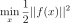

LeastSquaresProblem¶
-
class
LeastSquaresProblem(*args)¶ Least-squares problem.
This represents a least-squares problem:

where f is the residual function.
- Parameters
- residualFunction
Function Residual function.
- residualFunction
Examples
>>> import openturns as ot >>> residualFunction = ot.SymbolicFunction(['x0', 'x1'], ['10*(x1-x0^2)', '0.5-x0', '0.3-2*x1']) >>> problem = ot.LeastSquaresProblem(residualFunction)
Methods
getBounds(self)Accessor to bounds.
getClassName(self)Accessor to the object’s name.
getDimension(self)Accessor to input dimension.
getEqualityConstraint(self)Accessor to equality constraints.
getId(self)Accessor to the object’s id.
getInequalityConstraint(self)Accessor to inequality constraints.
getLevelFunction(self)Accessor to level function.
getLevelValue(self)Accessor to level value.
getName(self)Accessor to the object’s name.
getObjective(self)Accessor to objective function.
getResidualFunction(self)Accessor to level function.
getShadowedId(self)Accessor to the object’s shadowed id.
getVariablesType(self)Accessor to the variables type.
getVisibility(self)Accessor to the object’s visibility state.
hasBounds(self)Test whether bounds had been specified.
hasEqualityConstraint(self)Test whether equality constraints had been specified.
hasInequalityConstraint(self)Test whether inequality constraints had been specified.
hasLevelFunction(self)Test whether level function had been specified.
hasMultipleObjective(self)Test whether objective function is a scalar or vector function.
hasName(self)Test if the object is named.
hasResidualFunction(self)Test whether a least-square problem is defined.
hasVisibleName(self)Test if the object has a distinguishable name.
isContinuous(self)Check if the problem is continuous.
isMinimization(self)Test whether this is a minimization or maximization problem.
setBounds(self, bounds)Accessor to bounds.
setEqualityConstraint(self, equalityConstraint)Accessor to equality constraints.
setInequalityConstraint(self, …)Accessor to inequality constraints.
setLevelFunction(self, levelFunction)Accessor to level function.
setLevelValue(self, levelValue)Accessor to level value.
setMinimization(self, minimization)Tell whether this is a minimization or maximization problem.
setName(self, name)Accessor to the object’s name.
setObjective(self, objective)Accessor to objective function.
setResidualFunction(self, residualFunction)Accessor to level function.
setShadowedId(self, id)Accessor to the object’s shadowed id.
setVariablesType(self, variableType)Accessor to the variables type.
setVisibility(self, visible)Accessor to the object’s visibility state.
-
__init__(self, *args)¶ Initialize self. See help(type(self)) for accurate signature.
-
getClassName(self)¶ Accessor to the object’s name.
- Returns
- class_namestr
The object class name (object.__class__.__name__).
-
getDimension(self)¶ Accessor to input dimension.
- Returns
- dimensionint
Input dimension of objective function.
-
getEqualityConstraint(self)¶ Accessor to equality constraints.
- Returns
- equality
Function Describe equality constraints.
- equality
-
getId(self)¶ Accessor to the object’s id.
- Returns
- idint
Internal unique identifier.
-
getInequalityConstraint(self)¶ Accessor to inequality constraints.
- Returns
- inequality
Function Describe inequality constraints.
- inequality
-
getLevelValue(self)¶ Accessor to level value.
- Returns
- valuefloat
Level value.
-
getName(self)¶ Accessor to the object’s name.
- Returns
- namestr
The name of the object.
-
getShadowedId(self)¶ Accessor to the object’s shadowed id.
- Returns
- idint
Internal unique identifier.
-
getVariablesType(self)¶ Accessor to the variables type.
- Returns
- variablesType
Indices Types of the variables.
- variablesType
Notes
Possible values for each variable are ot.OptimizationProblemImplementation.CONTINUOUS, ot.OptimizationProblemImplementation.INTEGER and ot.OptimizationProblemImplementation.`BINARY`.
-
getVisibility(self)¶ Accessor to the object’s visibility state.
- Returns
- visiblebool
Visibility flag.
-
hasBounds(self)¶ Test whether bounds had been specified.
- Returns
- valuebool
True if bounds had been set for this problem, False otherwise.
-
hasEqualityConstraint(self)¶ Test whether equality constraints had been specified.
- Returns
- valuebool
True if equality constraints had been set for this problem, False otherwise.
-
hasInequalityConstraint(self)¶ Test whether inequality constraints had been specified.
- Returns
- valuebool
True if inequality constraints had been set for this problem, False otherwise.
-
hasLevelFunction(self)¶ Test whether level function had been specified.
- Returns
- valuebool
True if level function had been set for this problem, False otherwise.
-
hasMultipleObjective(self)¶ Test whether objective function is a scalar or vector function.
- Returns
- valuebool
False if objective function is scalar, True otherwise.
-
hasName(self)¶ Test if the object is named.
- Returns
- hasNamebool
True if the name is not empty.
-
hasResidualFunction(self)¶ Test whether a least-square problem is defined.
- Returns
- valuebool
True if this is a least-squares problem, False otherwise.
-
hasVisibleName(self)¶ Test if the object has a distinguishable name.
- Returns
- hasVisibleNamebool
True if the name is not empty and not the default one.
-
isContinuous(self)¶ Check if the problem is continuous.
- Returns
- isContinuousbool
Returns True if all variables are continuous.
-
isMinimization(self)¶ Test whether this is a minimization or maximization problem.
- Returns
- valuebool
True if this is a minimization problem (default), False otherwise.
-
setEqualityConstraint(self, equalityConstraint)¶ Accessor to equality constraints.
- Parameters
- equalityConstraint
Function Equality constraints.
- equalityConstraint
-
setInequalityConstraint(self, inequalityConstraint)¶ Accessor to inequality constraints.
- Parameters
- inequalityConstraint
Function Inequality constraints.
- inequalityConstraint
-
setLevelFunction(self, levelFunction)¶ Accessor to level function.
- Parameters
- levelFunction
Function Level function.
- levelFunction
-
setLevelValue(self, levelValue)¶ Accessor to level value.
- Parameters
- levelValuefloat
Level value.
-
setMinimization(self, minimization)¶ Tell whether this is a minimization or maximization problem.
- Parameters
- minimizationbool
True if this is a minimization problem, False otherwise.
-
setName(self, name)¶ Accessor to the object’s name.
- Parameters
- namestr
The name of the object.
-
setObjective(self, objective)¶ Accessor to objective function.
- Parameters
- objectiveFunction
Function Objective function.
- objectiveFunction
Notes
Constraints and bounds are cleared if the objective has a different input dimension in order to keep the problem valid at all time.
-
setResidualFunction(self, residualFunction)¶ Accessor to level function.
- Parameters
- levelFunction
Function Level function.
- levelFunction
-
setShadowedId(self, id)¶ Accessor to the object’s shadowed id.
- Parameters
- idint
Internal unique identifier.
-
setVariablesType(self, variableType)¶ Accessor to the variables type.
- Parameters
- variablesType
Indices Types of the variables.
- variablesType
Notes
Possible values for each variable are ot.OptimizationProblemImplementation.CONTINUOUS, ot.OptimizationProblemImplementation.INTEGER and ot.OptimizationProblemImplementation.BINARY.
-
setVisibility(self, visible)¶ Accessor to the object’s visibility state.
- Parameters
- visiblebool
Visibility flag.